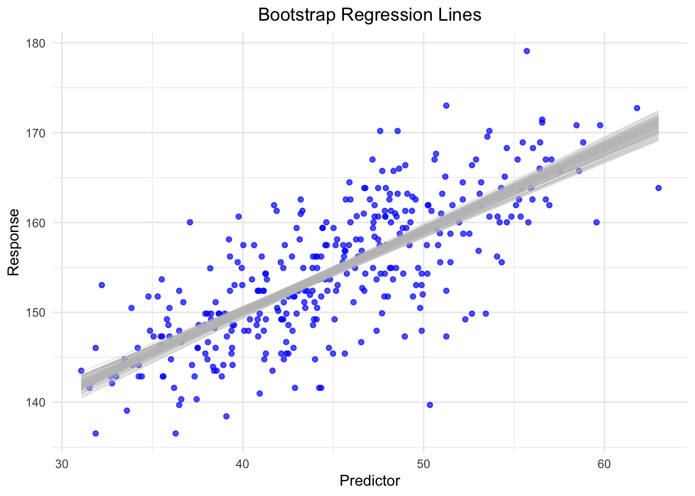
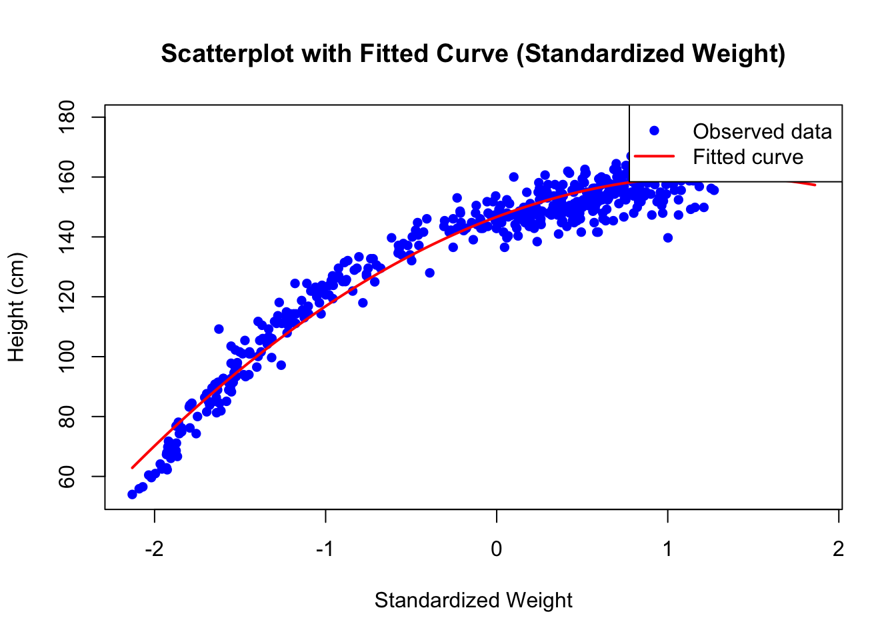

Chapter 4 Multiple Linear Regression
So far, we have dealt with the simple mean model and the model with one predictor in the Bayesian and Frequentist framework. We will now add another predictor and subsequently an interaction term to the model.
4.1 Linear Regression with Two Predictors in the Baysian Framework
4.1.1 Meaning of “linear”
What is a linear model? The term “linear” refers to the relationship of the predictors with the dependent variable (or outcome). The following model is also linear:
\[height_i = \beta_0 + \beta_1 x_i + \beta_2 x_i^2\]
The model is linear in the parameters \(\beta_0, \beta_1, \beta_2\) but not in the predictors \(x_i\). The term \(x_i^2\) is ok, since the heights are just sums of multiples of the predictors (which can be nonlinear). This model is not a linear model anymore:
\[height_i = \beta_0 + \beta_1 x_i + e^{\beta_2 x_i^2}\]
\(\beta_2\) is now is the exponent of \(e\). It would also not be linear, if the coefficients are in a square root or in the denominator of a fraction, or in a sine or in a logarithm. You get the idea.
4.1.2 Adding a transformed predictor to the model
The world is not flat, although some people on YouTube might tell you otherwise. In our context, not all regression is linear.
Around 4.5. in the book Statistical Rethinking there is are lineare regression using a quadratic term for weight. It is a principle, called the “variable inclusion principle”, that we always include the lower order terms when fitting a model with higher order terms. See Westfall, p. 213. If we do not include the lower order terms, the coefficient does not measure what we want it to meausure (curvature in our case). For instance, if we want to model a quadratic relationship (parabola) between weight and height, we also have to include the linear term for weight (\(x_i\)). Since we do not assume the relationship between weight and height to be linear but quadratic (which is a polynomial of degree 2), we call this a polynomial regression.
This time, lets look at the whole age range of data from the !Kung San people.
library(rethinking)
library(tidyverse)
data(Howell1)
d <- Howell1
d %>% ggplot(aes(x = weight, y = height)) +
geom_point() +
geom_smooth(method = "lm", se = FALSE, color = "blue") +
geom_smooth(method = "loess", se = FALSE, color = "red")## `geom_smooth()` using formula = 'y ~ x'
## `geom_smooth()` using formula = 'y ~ x'
It would not be a good idea to fit a linear trend through this data, because we would not caupture the relationship adequately. The red line is a loess smothing line which is often used to capture non-linear relationships. The blue line is the usual line from classic linear regression (from the previous chapter). Which one describes the data more accurately? In this case it is obvious, a non-linear relationship is present and it might be a good idea to model it. Modeling the relationshiop with a linear trend, leads to bad residuals with structure. We will demonstrate this in the freuqentist setting. Unfortunately, in more complex settings, with more predictors, it is not always so easy to see.
This time, we use the mean for the prior from the book (\(178 cm\)). The model equations are (see exercise 2):
\[\begin{eqnarray*} h_i &\sim& \text{Normal}(\mu_i, \sigma) \\ \mu_i &=& \alpha + \beta_1 x_i + \beta_2 x_i^2 \\ \alpha &\sim& \text{Normal}(178, 20) \\ \beta_1 &\sim& \text{Log-Normal}(0, 1) \\ \beta_2 &\sim& \text{Normal}(0, 1) \\ \sigma &\sim& \text{Uniform}(0, 50) \end{eqnarray*}\]
The prior for \(\beta_1\) is log-normal, because we can reasonably assume the the overall linear trend is positive. The prior for \(\beta_2\) is normal, because we are not so sure. If we thought back to our school days to the topic of “curve discussion” or parabolas, we could probably also assume that \(\beta_2\) is negative. But, data will show.
How can we interpret the model equations? The model assumes that the expected height \(\mu_i\) of a person \(i\) depends non-linearly on the weight \(x_i\) of the person. We are in the business of mean-modeling. The prior for \(\sigma\) is uniform as before. The prior for \(\alpha\) is normal with mean \(178\) and standard deviation \(20\) because this is what we can expect from body heights in our experience.
Let’s fit the model:
We standardize the weight again and add the squared weights to the data set. Standardizing the the predictors is a good idea, especially in polynomial regression since squares and cubes of large numbers can get huge and cause numerical problems.
Let’s fit the model with the quadratic term for weight:
# Standardize weight
d$weight_s <- (d$weight - mean(d$weight)) / sd(d$weight)
# Square of standardized weight
d$weight_s2 <- d$weight_s^2
m4.1 <- quap(
alist(
height ~ dnorm(mu, sigma),
mu <- a + b1*weight_s + b2*weight_s^2,
a ~ dnorm(178, 20),
b1 ~ dnorm(0, 10),
b2 ~ dnorm(0, 10),
sigma ~ dunif(0, 50)
), data = d)
precis(m4.1)## mean sd 5.5% 94.5%
## a 146.672739 0.3736465 146.075580 147.269898
## b1 21.397637 0.2898827 20.934348 21.860925
## b2 -8.419933 0.2813308 -8.869554 -7.970312
## sigma 5.750550 0.1743749 5.471865 6.029235\(\beta_2\) is indeed negative. We get our join distribution of the four model parameters. Let’s look at the fit using the mean estimates of the posterior distribution:
# Summarize the model parameters
model_summary <- precis(m4.1)
params <- as.data.frame(model_summary)
# Extract parameter values
a <- params["a", "mean"] # Intercept
b1 <- params["b1", "mean"] # Coefficient for standardized weight
b2 <- params["b2", "mean"] # Coefficient for squared standardized weight
# Generate a sequence of standardized weights for the fitted curve
weight_fine <- seq(min(d$weight_s), max(d$weight_s), length.out = 200)
# Calculate the fitted values using the quadratic equation
height_fitted <- a + b1 * weight_fine + b2 * weight_fine^2
# Plot the scatterplot
plot(d$weight_s, d$height, pch = 16, col = "blue",
xlab = "Standardized Weight", ylab = "Height (cm)",
main = "Scatterplot with Fitted Curve (Standardized Weight)")
# Add the fitted curve
lines(weight_fine, height_fitted, col = "red", lwd = 2)
# Add a legend
legend("topright", legend = c("Observed data", "Fitted curve"),
col = c("blue", "red"), pch = c(16, NA), lty = c(NA, 1), lwd = 2)
This fits much better than the linear model. In the book, there is also a polynomial regression with a cubic term for weight. Maybe this fits even better (see exercise 1).
……….
4.2 Linear Regression with Two Predictors in the Frequentist Framework
4.2.1 Adding a transformed predictor to the model
No, let’s fit the same model as above in the frequentist framework.
The model is:
\[height_i = \alpha + \beta_1 weight_i + \beta_2 weight_i^2 + \varepsilon_i\] whereas \[\varepsilon_i \sim N(0, \sigma)\]
We are looking for fixed, but unknown, parameters \(\alpha\), \(\beta_1\), \(\beta_2\) and \(\sigma\).
This is fit again using the lm function in R which uses least squares to estimate the parameters.
At this point I could torture you with matrix algebra
and show you the normal equations for linear regression,
but I will spare you for now.
Note that the least squares algorithm for fitting the curve works for all
kinds of functions. We could also fit an exponential curve using the same
technique.
# scale weight
d$weight_s <- scale(d$weight)
# Fit the model
m4.2 <- lm(height ~ weight_s + I(weight_s^2), data = d)
summary(m4.2)##
## Call:
## lm(formula = height ~ weight_s + I(weight_s^2), data = d)
##
## Residuals:
## Min 1Q Median 3Q Max
## -19.9689 -3.9794 0.2364 3.9262 19.5182
##
## Coefficients:
## Estimate Std. Error t value Pr(>|t|)
## (Intercept) 146.6604 0.3748 391.30 <2e-16 ***
## weight_s 21.4149 0.2908 73.64 <2e-16 ***
## I(weight_s^2) -8.4123 0.2822 -29.80 <2e-16 ***
## ---
## Signif. codes: 0 '***' 0.001 '**' 0.01 '*' 0.05 '.' 0.1 ' ' 1
##
## Residual standard error: 5.766 on 541 degrees of freedom
## Multiple R-squared: 0.9565, Adjusted R-squared: 0.9564
## F-statistic: 5952 on 2 and 541 DF, p-value: < 2.2e-16See ?I in R. This command is used so that R knows that it should
treat the “^2” as “square” and not as formula syntax.
We could also create a new variable as before. Whatever you prefer.
4.2.1.1 Interpretation of output and coefficients
- The intercept \(\alpha\) is the model-predicted height of a person of average weight. Note that this is not the average height of the people in the data set, since the mean model is also a model, but different from ours.
- The residuals have range from \(-19.97\) to \(19.51\). So, the model maximally overestimates the heights by \(19.97\) cm and underestimates by \(19.51\) cm. These numbers are plausible when you look at the scatterplot with the fitted curve.
- The coefficients \(\beta_1\) and \(\beta_2\) agree with the Bayes estimates. Specifically, \(\beta_2\) is non-zero indicating curvature.
- If you like \(p\)-values: All the hypotheses that the coefficients are zero are rejected. The \(p\)-values are very small. The data can not be explained by chance alone. On the other hand, for at least \(\beta_1\) and and the global test this is not a surprise when you look at the scatterplot.
- The \(R^2\) is a whopping \(0.96\) which could be a sign of overfitting, but in this case we conclude that the true relationship is caputured rather well. Overfitting would occur if our curve would wiggle around the data points, so we would fit the data too much to the noise in the data than the underying trend.
4.2.1.2 Checking model assumptions
## Some of the variables were in matrix-format - probably you used
## `scale()` on your data?
## If so, and you get an error, please try `datawizard::standardize()` to
## standardize your data.
## Some of the variables were in matrix-format - probably you used
## `scale()` on your data?
## If so, and you get an error, please try `datawizard::standardize()` to
## standardize your data.
If we want to be perfectionists, we could remark that (upper right plot) in the lower fitted values the residuals are more negative, meaning that the model overestimates the heights in this region. In the middle region the model underestimates a bit and we can see a positive tendency in the residuals. Apart from that, the diagnostic plots look excellent.
4.2.2 Adding another predictor to the model
Now, we add another predictor to the model. We use \(X_1\) and \(X_2\) simultaneously to predict \(Y\). We are now in the lucky situation that we can still visualize the situation in 3D. The regression line from simple linear regression becomes a plane. The vertical distances between the data points and the plane are the residuals. See here or here at the end for examples. Minimizing the sum of the squared errors gives again the estimates for the coefficients.
For demonstration purposes, we can create data ourselves with known coefficients. This is the true model, which we usually do not know:
\[ Y_i = \beta_0 + \beta_1 X_{1i} + \beta_2 X_{2i} + \varepsilon_i\] \[ \varepsilon_i \sim N(0, \sigma^2)\] \[ \mathbb{E}(Y_i|X_1 = x_1; X_2 = x_2) = \beta_0 + \beta_1 x_1 + \beta_2 x_2\] \[ i = 1 \ldots n\]
for example:
\[ Y_i = 10 + 0.5 \cdot X_{1i} + 1 \cdot X_{2i} + \varepsilon_i\] \[ \varepsilon_i \sim N(0, 5)\] \[ \mathbb{E}(Y_i|X_1 = x_1; X_2 = x_2) = 10 + 0.5 x_1 + 1 x_2\] \[ i = 1 \ldots n\]
According to the model, the conditional expected value of \(Y_i\) given \(X_1 = x_1\) and \(X_2 = x_2\) is a linear function of \(x_1\) and \(x_2\). Note, that small letters are realized values of random variables. Also note, that in the expectation the error term goes away, since \(\mathbb{E}(\varepsilon_i) = 0\).
- If \(X_1\) increases by one unit, \(Y\) increases by \(0.5\) units on average (in expectation).
- If \(X_2\) increases by one unit, \(Y\) increases by \(1\) unit on average (in expectation).
- If \(X_1\) and \(X_2\) are zero, \(Y\) is \(10\) on average (in expectation).
Why in expectation? Because there is still the error term which makes the whole thing random! We can see that an increase in \(X_1\) does not influence the relationship between \(X_2\) and \(Y\). Hence, there is no interaction between \(X_1\) and \(X_2\) with respect to \(Y\).
Now lets’s draw 100 points from this model, fit the model and add the plane:
library(plotly)
#set.seed(123)
n <- 100
X1 <- rnorm(n, 0, 5)
X2 <- rnorm(n, 0, 5)
Y <- 10 + 0.5 * X1 + 1 * X2 + rnorm(n, 0, 2)
d <- data.frame(X1 = X1, X2 = X2, Y = Y)
# Fit the model
m4.3 <- lm(Y ~ X1 + X2, data = d)
summary(m4.3)##
## Call:
## lm(formula = Y ~ X1 + X2, data = d)
##
## Residuals:
## Min 1Q Median 3Q Max
## -4.8674 -1.3924 0.0682 1.7914 4.9145
##
## Coefficients:
## Estimate Std. Error t value Pr(>|t|)
## (Intercept) 10.19906 0.21844 46.69 <2e-16 ***
## X1 0.56391 0.04348 12.97 <2e-16 ***
## X2 1.01708 0.04507 22.57 <2e-16 ***
## ---
## Signif. codes: 0 '***' 0.001 '**' 0.01 '*' 0.05 '.' 0.1 ' ' 1
##
## Residual standard error: 2.169 on 97 degrees of freedom
## Multiple R-squared: 0.8801, Adjusted R-squared: 0.8776
## F-statistic: 356 on 2 and 97 DF, p-value: < 2.2e-16# Create a grid for the plane
X1_grid <- seq(min(d$X1), max(d$X1), length.out = 20)
X2_grid <- seq(min(d$X2), max(d$X2), length.out = 20)
grid <- expand.grid(X1 = X1_grid, X2 = X2_grid)
# Predict the values for the grid
grid$Y <- predict(m4.3, newdata = grid)
# Convert the grid into a matrix for the plane
plane_matrix <- matrix(grid$Y, nrow = length(X1_grid), ncol = length(X2_grid))
# Create the interactive 3D plot
plot_ly() %>%
add_markers(
x = d$X2, y = d$X1, z = d$Y,
marker = list(color = "blue", size = 5),
name = "Data Points"
) %>%
add_surface(
x = X1_grid, y = X2_grid, z = plane_matrix,
colorscale = list(c(0, 1), c("red", "pink")),
showscale = FALSE,
opacity = 0.7,
name = "Fitted Plane"
) %>%
plotly::layout(
scene = list(
xaxis = list(title = "X1"),
yaxis = list(title = "X2"),
zaxis = list(title = "Y")
),
title = "Interactive 3D Scatterplot with Fitted Plane"
)This is, of course, a very idealized situation. There is no curvature in the plane, no interaction, no outliers, no heteroscadasticity. It’s the simplest case of multiple regression with 2 predictors. Reality is - usually - more complicated.
Let’s look at summary output and check model assumptions:
##
## Call:
## lm(formula = Y ~ X1 + X2, data = d)
##
## Residuals:
## Min 1Q Median 3Q Max
## -4.8674 -1.3924 0.0682 1.7914 4.9145
##
## Coefficients:
## Estimate Std. Error t value Pr(>|t|)
## (Intercept) 10.19906 0.21844 46.69 <2e-16 ***
## X1 0.56391 0.04348 12.97 <2e-16 ***
## X2 1.01708 0.04507 22.57 <2e-16 ***
## ---
## Signif. codes: 0 '***' 0.001 '**' 0.01 '*' 0.05 '.' 0.1 ' ' 1
##
## Residual standard error: 2.169 on 97 degrees of freedom
## Multiple R-squared: 0.8801, Adjusted R-squared: 0.8776
## F-statistic: 356 on 2 and 97 DF, p-value: < 2.2e-16
We could repeat this simulation to get a feeling for the variability. The posterior predictive checks look nice. In this case, we know that the model is true and with this knowledge we can assess the diagnostic plots in front of us.
4.2.3 Interaction term \(X_1 \times X_2\)
I recommend reading the excellent explanations about interactions in John Kruschke’s book Doing Bayesian Data Analysis, 15.2.2 und 15.2.3. Peter Westfall also has a nice explanation in his book in section 9.3.
Our statistical model is now:
\[ Y_i = \beta_0 + \beta_1 X_{1i} + \beta_2 X_{2i} + \beta_3 X_{1i} \times X_{2i} + \varepsilon_i\] \[ \varepsilon_i \sim N(0, \sigma^2)\] \[ \mathbb{E}(Y_i|X_1 = x_1; X_2 = x_2) = \beta_0 + beta_1 x_{1} + beta_2 x_{2} + \beta_3 x_{1} \times x_{2}\] \[ i = 1 \ldots n\]
for example:
\[ Y_i = 10 + 0.5 \cdot X_{1i} + 1 \cdot X_{2i} + 0.89 \cdot X_{1i} \cdot X_{2i} + \varepsilon_i\] \[ \varepsilon_i \sim N(0, 5)\] \[ \mathbb{E}(Y_i|X_1 = x_1; X_2 = x_2) = 10 + 0.5 x_1 + 1 x_2 + 0.89 x_1 x_2\] \[ i = 1 \ldots n\]
The second equation states that the conditional expectation of \(Y\) given \(X_1\) and \(X_2\) is a function of \(X_1\) and \(X_2\) and their interaction. We are in a different situation now. Set for instance \(x_2\) to a certain value, say \(x_2 = 7\). Then the relationship (in expectation) between \(Y\) and \(X_1\) is:
\[ \mathbb{E}(Y_i|X_1 = x_1; X_2 = 7) = 10 + 0.5 x_1 + 1 \cdot 7 + 0.89 x_1 \cdot 7\] \[ \mathbb{E}(Y_i|X_1 = x_1; X_2 = 7) = 10 + (0.5 + 0.89 \cdot \mathbf{7}) \cdot x_1 + 1 \cdot 7\]
Depending on the value of \(x_2\), the effect of \(X_1\) on \(Y\) changes. Hence, \(X_2\) modifies the relationship between \(X_1\) and \(Y\), states otherwise, \(X_1\) and \(X_2\) interact with respect to \(Y\). Remember, the word effect is used in a strictly technical/statistical sense and not in a causal sense. It does not mean that if we do change \(X_1\) by one unit, \(Y\) will also change in an experiment. We are purely describing the relationship in an associative way. We will probably touch causality in a later chapter. Bayesian statistics and causal inference are gaining popularity.
Let’s draw 100 points from this model, fit the model and add the plane:
#set.seed(123)
n <- 100
X1 <- rnorm(n, 0, 5)
X2 <- rnorm(n, 0, 5)
Y <- 10 + 0.5 * X1 + 1 * X2 + 0.89 * X1 * X2 + rnorm(n, 0, 5)
d <- data.frame(X1 = X1, X2 = X2, Y = Y)
# Fit the model
m4.4 <- lm(Y ~ X1 * X2, data = d)
summary(m4.4)##
## Call:
## lm(formula = Y ~ X1 * X2, data = d)
##
## Residuals:
## Min 1Q Median 3Q Max
## -12.193 -3.064 0.056 3.365 13.162
##
## Coefficients:
## Estimate Std. Error t value Pr(>|t|)
## (Intercept) 10.86481 0.48835 22.25 < 2e-16 ***
## X1 0.67973 0.09402 7.23 1.16e-10 ***
## X2 1.13120 0.08732 12.96 < 2e-16 ***
## X1:X2 0.89915 0.01606 55.99 < 2e-16 ***
## ---
## Signif. codes: 0 '***' 0.001 '**' 0.01 '*' 0.05 '.' 0.1 ' ' 1
##
## Residual standard error: 4.872 on 96 degrees of freedom
## Multiple R-squared: 0.9735, Adjusted R-squared: 0.9727
## F-statistic: 1176 on 3 and 96 DF, p-value: < 2.2e-16# Create a grid for the plane
X1_grid <- seq(min(d$X1), max(d$X1), length.out = 20)
X2_grid <- seq(min(d$X2), max(d$X2), length.out = 20)
grid <- expand.grid(X1 = X1_grid, X2 = X2_grid)
# Predict the values for the grid
grid$Y <- predict(m4.4, newdata = grid)
# Convert the grid into a matrix for the plane
plane_matrix <- matrix(grid$Y, nrow = length(X1_grid), ncol = length(X2_grid))
# Create the interactive 3D plot
plot_ly() %>%
add_markers(
x = d$X2, y = d$X1, z = d$Y,
marker = list(color = "blue", size = 5),
name = "Data Points"
) %>%
add_surface(
x = X1_grid, y = X2_grid, z = plane_matrix,
colorscale = list(c(0, 1), c("red", "pink")),
showscale = FALSE,
opacity = 0.7,
name = "Fitted Plane"
) %>%
plotly::layout(
scene = list(
xaxis = list(title = "X1"),
yaxis = list(title = "X2"),
zaxis = list(title = "Y")
),
title = "Interactive 3D Scatterplot with Fitted Plane"
)4.3 Exercises
4.3.2 [E] Exercise 2
Consider the model equations from above where we used polynomial regression to model the relationship between weight and height:
- Draw the model hierarchy for the model.
4.4 TODOS
- If you add a lot of variables to your regression model, you can get an arbitrarily large (\(\le 1\)) \(R^2\). We will verify this when we have more than 2 explanatory variables.
- maybe create animation of points wiggling to get a feeling for the variability
- Show by simulation what Gelman talks about with significant p values. So I scan the data for significant p values and then simulate data with the same effect size and see how often I get significant p values. Especially the next effect would be probably smaller, especially, if one did p-hacking! Calculate a priori probability for replication (def?).
- For multiple regression: We could also look at the simple regression problem as fitting a plane to the data, as is done here or here at the end.
- Variability of confidence interval borders
- Chapter: Sample size calculations for logistic and multivariate regression, Proportions, ICCs, t.test
- Chapter about ICCs, but maybe reduced
- clearer difference between prediction and explanation. why do we need causal inference and why do we have to be careful when we throw predictors into a model, how sure can we be that the model does what we want it to do?
- simpons paradoxj
- causal terror of richards book, fork, pipe, collider
- Angenommen man hat ein masking eines Effekts und der Model fit ist aber gut (keine Voraussetzung verletzt), ist diese Situation möglich?